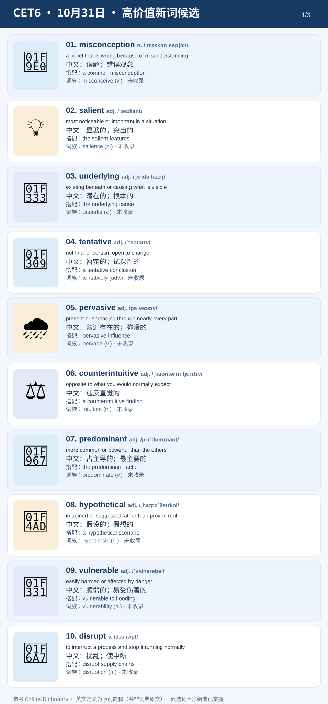
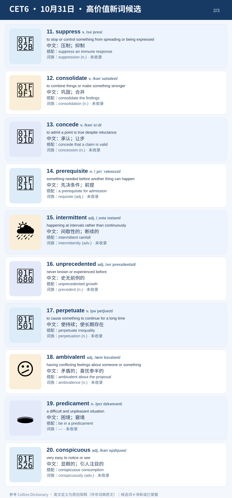
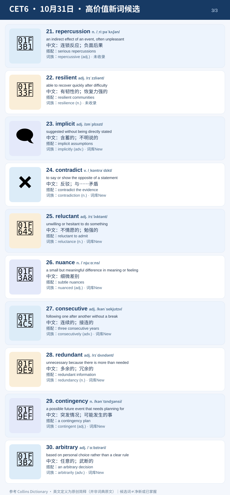

10月31日｜六级高价值新词候选
30个候选 · 与昨日D0和今日日常SRS拆开 · 每词意象图 + IPA + 英文简释 + 中文 + 语块 + 词族
选词纠偏：昨天的 scrutinize、aversion 等20项属于 D1复习；昨天精听圈出的10项也非新词。这里另外筛选了30个未被当前正式学习记录证明已掌握的候选。词库中的 New 或未收录仍不等于真正净新，请自行标记。
第一页｜基础论证与现象


第二页｜变化、决策与后果


第三页｜态度、判断与制度


D0独立测试（30题，答案提交前不展示）
写出每个英文词在学习卡语境中的核心中文含义。B层优先语义正确，不纠结中文措辞；这不是正式SRS复习。